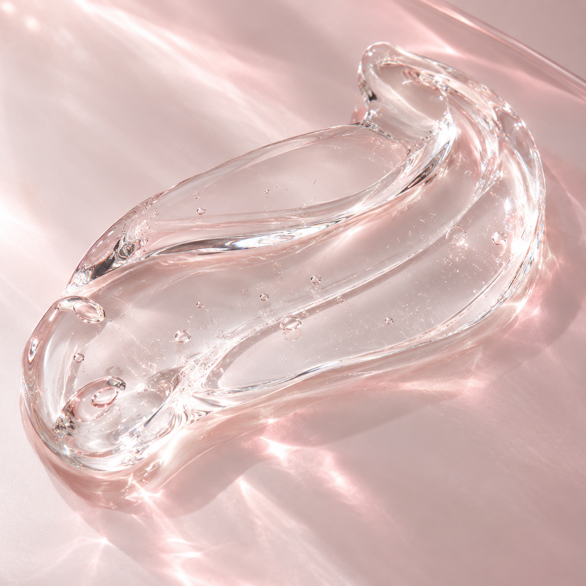

SHARECO · PLAY & CARE
すーっとなぞる、一筆書き
ぷるんと、ひと筆。
ぜんぶ、つなげられる？0 / 18
同じマスは1回だけ。戻ってやり直せます。
ジェルから、白いマスをつなごう。0%
ボタンで操作する
1問だけ · 時間制限なし
ゲームはイメージです。商品の効果を表すものではありません。
本品イメージ。お届けするサンプルは3gです。
PLAY & CARE
肌にも、
心地いいひとぬりを。
乾燥が気になる肌に。
すーっと伸びるジェルの使い心地、
まずは少量から試してみませんか。
シャレコ レスキュースキンジェル
お一人さま1回限り無料サンプル 3g
無料サンプルを試してみるシャレコ公式の応募ページへ
FEEL IT ON YOUR SKIN
毎日使うものだから、
肌との相性を大切に。
塗り心地は？ 質感は？ 自分の肌に合う？
気になることを、無料サンプルで確かめてください。

テクスチャーイメージ01 / TEXTUREすーっと伸びる。
すーっと伸びる。
そっと、肌になじませる。
少量でもよく伸びるジェルタイプ。
腕や脚などの気になる部位で、
その塗り心地をお試しいただけます。
配合成分キチンナノファイバー
鳥取大学で研究開発された成分を配合。
02 / PERSONAL CARE肌のこと、
肌のこと、
ひとりで悩まなくていい。
使い方や肌のお悩みは、
シャレコのカウンセラーへ。
LINE・メール・電話で、ご相談をお受けしています。あなたに合うケアを、一緒に考えます。
無料の肌相談をご用意していますYOUR FIRST SHARECO
まずは、あなたの肌で。
シャレコ レスキュースキンジェル無料サンプルお一人さま1回限り
3g
塗り心地・質感のお試しや、
パッチテストにお使いいただけます。
シャレコ公式の応募ページへ進みます。
お申し込みの方にはメルマガ「シャレコレター♪」が届きます。
応募条件・詳細は遷移先でご確認ください。
あなたの肌に、あなたに合うケアを。